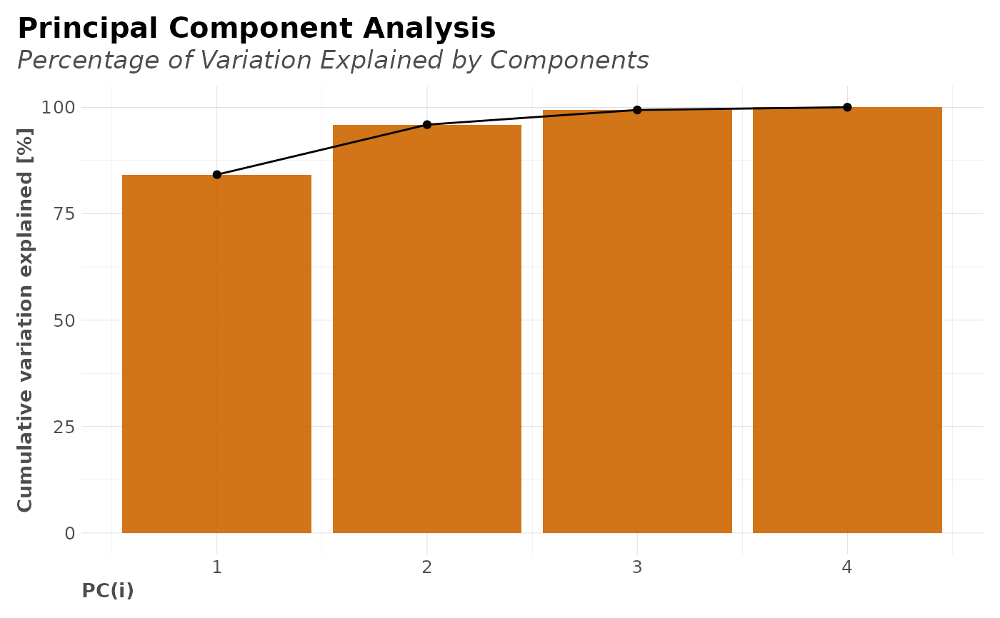

This function lets the user cluster a whole data.frame automatically. As you might know, the goal of kmeans is to group data points into distinct non-overlapping subgroups. If needed, one hot encoding will be applied to categorical values automatically with this function. For consideration: Scale/standardize the data when applying kmeans. Also, kmeans assumes spherical shapes of clusters and does not work well when clusters are in different shapes such as elliptical clusters.
clusterKmeans( df, k = NA, limit = 20, drop_na = TRUE, ignore = NA, ohse = TRUE, norm = TRUE, comb = c(1, 2), seed = 123, quiet = TRUE )
Arguments
| df | Dataframe |
|---|---|
| k | Integer. Number of clusters |
| limit | Integer. How many clusters should be considered? |
| drop_na | Boolean. Should NA rows be removed? |
| ignore | Character vector. Which columns should be excluded when calculating kmeans? |
| ohse | Boolean. Do you wish to automatically run one hot encoding to non-numerical columns? |
| norm | Boolean. Should the data be normalized? |
| comb | Vector. Which columns do you wish to plot? Select which two variables by name or column position. |
| seed | Numeric. Seed for reproducibility |
| quiet | Boolean. Keep quiet? If not, print messages |
See also
Other Clusters:
clusterOptimalK(),
clusterVisualK()
Examples
Sys.unsetenv("LARES_FONT") # Temporal data("iris") df <- subset(iris, select = c(-Species)) # Find optimal k check_k <- clusterKmeans(df, limit = 10) check_k$nclusters_plot# You can also use our other functions: # clusterOptimalK() and clusterVisualK() # Run with selected k clusters <- clusterKmeans(df, k = 3) names(clusters)#> [1] "nclusters" "nclusters_plot" "df" "clusters" #> [5] "fit" "means" "correlations" "PCA"# 3D interactive plot if (FALSE) clusters$PCA$plot_1_2_3